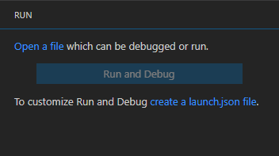
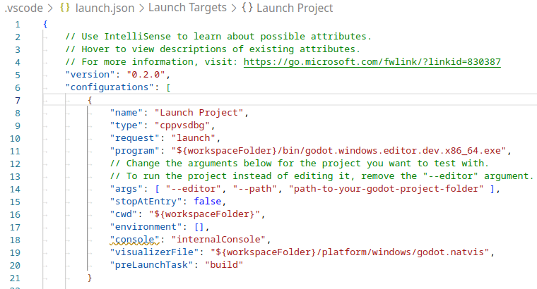
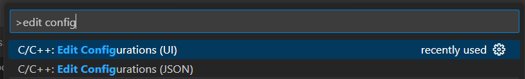

Visual Studio Code
Ghi chú
Tài liệu này dành cho việc đóng góp vào game engine, không phải để dùng Visual Studio Code làm trình soạn thảo C# hay GDScript. Để viết mã C# hoặc GDScript trong trình soạn thảo bên ngoài, xem hướng dẫn C# về cấu hình trình soạn thảo bên ngoài hoặc hướng dẫn GDScript về sử dụng trình soạn thảo văn bản bên ngoài.
Visual Studio Code là một trình soạn thảo mã miễn phí, đa nền tảng của Microsoft (đừng nhầm với Visual Studio).
Import dự án
Hãy đảm bảo extension C/C++ đã được cài đặt. Bạn có thể tìm hướng dẫn trong tài liệu chính thức. Ngoài ra, bạn có thể dùng clangd thay thế.
Khi dùng extension clangd, hãy chạy
scons compiledb=yes.Từ màn hình chính của Visual Studio Code, mở thư mục gốc của Godot bằng File > Open Folder....
Nhấn Ctrl + Shift + P để mở cửa sổ command prompt và nhập Configure Task.

Chọn tùy chọn Create tasks.json file from template.

Sau đó chọn Others.

Nếu không có tùy chọn Create tasks.json file from template, hãy xóa tệp nếu nó đã tồn tại trong thư mục của bạn, hoặc tạo thủ công tệp
.vscode/tasks.json. Xem Tasks in Visual Studio Code để biết thêm chi tiết về task.Trong tệp
tasks.json, tìm mảng"tasks"và thêm một mục mới vào đó:.vscode/tasks.json{ "label": "build", "group": "build", "type": "shell", "command": "scons", "args": [ // enable for debugging with breakpoints "dev_build=yes", ], "problemMatcher": "$msCompile" }

Một ví dụ về tệp tasks.json đã được điền đầy đủ.
Các tham số có thể khác nhau tùy theo thiết lập và nhu cầu của bạn. Xem Giới thiệu về hệ thống build để biết danh sách đầy đủ các tham số.
Gỡ lỗi dự án
Để chạy và debug dự án, bạn cần tạo một cấu hình mới trong tệp launch.json.
Nhấn Ctrl + Shift + D để mở bảng Run.
Nếu thiếu tệp
launch.json, bạn sẽ được nhắc tạo một tệp mới.

Chọn C++ (GDB/LLDB). Ở đây có thể có một tùy chọn khác dành riêng cho nền tảng. Nếu chọn tùy chọn đó, hãy điều chỉnh ví dụ cấu hình được cung cấp cho phù hợp.
Trong tệp
launch.json, tìm mảng"configurations"và thêm một mục mới vào đó:
{
"name": "Launch Project",
"type": "lldb",
"request": "launch",
// Change to godot.linuxbsd.editor.dev.x86_64.llvm for llvm-based builds.
"program": "${workspaceFolder}/bin/godot.linuxbsd.editor.dev.x86_64",
// Change the arguments below for the project you want to test with.
// To run the project instead of editing it, remove the "--editor" argument.
"args": [ "--editor", "--path", "path-to-your-godot-project-folder" ],
"stopAtEntry": false,
"cwd": "${workspaceFolder}",
"environment": [],
"externalConsole": false,
"preLaunchTask": "build"
}
{
"name": "Launch Project",
"type": "cppdbg",
"request": "launch",
// Change to godot.linuxbsd.editor.dev.x86_64.llvm for llvm-based builds.
"program": "${workspaceFolder}/bin/godot.linuxbsd.editor.dev.x86_64",
// Change the arguments below for the project you want to test with.
// To run the project instead of editing it, remove the "--editor" argument.
"args": [ "--editor", "--path", "path-to-your-godot-project-folder" ],
"stopAtEntry": false,
"cwd": "${workspaceFolder}",
"environment": [],
"externalConsole": false,
"setupCommands":
[
{
"description": "Enable pretty-printing for gdb",
"text": "-enable-pretty-printing",
"ignoreFailures": true
},
{
"description": "Load custom pretty-printers for Godot types.",
"text": "source ${workspaceRoot}/misc/utility/godot_gdb_pretty_print.py"
}
],
"preLaunchTask": "build"
}
{
"name": "Launch Project",
"type": "cppvsdbg",
"request": "launch",
"program": "${workspaceFolder}/bin/godot.windows.editor.dev.x86_64.exe",
// Change the arguments below for the project you want to test with.
// To run the project instead of editing it, remove the "--editor" argument.
"args": [ "--editor", "--path", "path-to-your-godot-project-folder" ],
"stopAtEntry": false,
"cwd": "${workspaceFolder}",
"environment": [],
"console": "internalConsole",
"visualizerFile": "${workspaceFolder}/platform/windows/godot.natvis",
"preLaunchTask": "build"
}
{
"name": "Launch Project",
"type": "lldb",
"request": "launch",
"program": "${workspaceFolder}/bin/godot.macos.editor.x86_64",
// Change the arguments below for the project you want to test with.
// To run the project instead of editing it, remove the "--editor" argument.
"args": ["--editor", "--path", "path-to-your-godot-project-folder"],
"cwd": "${workspaceFolder}",
"preLaunchTask": "build"
}
{
"name": "Launch Project",
"type": "lldb",
"request": "launch",
"program": "${workspaceFolder}/bin/godot.macos.editor.arm64",
// Change the arguments below for the project you want to test with.
// To run the project instead of editing it, remove the "--editor" argument.
"args": ["--editor", "--path", "path-to-your-godot-project-folder"],
"cwd": "${workspaceFolder}",
"preLaunchTask": "build"
}

Một ví dụ về tệp launch.json đã được điền đầy đủ.
Ghi chú
Do các vấn đề hiệu năng thất thường, bạn nên dùng LLDB thay vì GDB trên các hệ thống dựa trên Unix. Hãy đảm bảo extension CodeLLDB đã được cài đặt cho các cấu hình dùng lldb.
Nếu gặp vấn đề với lldb, bạn có thể cân nhắc dùng gdb (xem cấu hình LinuxBSD_gdb).
Lưu ý rằng lldb có thể hoạt động tốt hơn với các bản build dựa trên LLVM. Xem Biên dịch cho Linux, *BSD để biết thêm thông tin.
Tên trong program phụ thuộc vào cấu hình build của bạn, ví dụ godot.linuxbsd.editor.dev.x86_64 cho nền tảng LinuxBSD 64-bit với target=editor và dev_build=yes.
Cấu hình IntelliSense
Đối với extension C/C++:
Để sửa các lỗi include mà bạn có thể gặp, bạn cần cấu hình một số cài đặt trong tệp c_cpp_properties.json.
Trước tiên, hãy nhớ build dự án vì một số tệp cần được tạo ra.
Chỉnh sửa tệp C/C++ Configuration bằng giao diện hoặc bằng văn bản:

Thêm một đường dẫn include cho nền tảng của bạn, ví dụ
${workspaceFolder}/platform/windows.Thêm các define cho trình chỉnh sửa
TOOLS_ENABLED, bản build debugDEBUG_ENABLEDvà kiểm thửTESTS_ENABLED.Hãy đảm bảo đường dẫn trình biên dịch được cấu hình đúng với trình biên dịch bạn đang dùng. Xem Giới thiệu về hệ thống build để biết thêm thông tin về nền tảng của bạn.
Tệp
c_cpp_properties.jsontrên Windows sẽ trông tương tự như sau:.vscode/c_cpp_properties.json{ "configurations": [ { "name": "Win32", "includePath": [ "${workspaceFolder}/**", "${workspaceFolder}/platform/windows" ], "defines": [ "_DEBUG", "UNICODE", "_UNICODE", "TOOLS_ENABLED", "DEBUG_ENABLED", "TESTS_ENABLED" ], "windowsSdkVersion": "10.0.22621.0", "compilerPath": "C:/Program Files/Microsoft Visual Studio/2022/Community/VC/Tools/MSVC/14.39.33519/bin/Hostx64/x64/cl.exe", "cStandard": "c17", "cppStandard": "c++17", "intelliSenseMode": "windows-msvc-x64" } ], "version": 4 }
Ngoài ra, bạn có thể dùng tham số scons
compiledb=yesvà đặt cài đặt compile commandscompileCommandsthànhcompile_commands.json, nằm trong phần nâng cao của giao diện C/C++ Configuration.Bạn có thể thêm tham số này vào build task trong
tasks.jsonvì nó cần được chạy mỗi khi có tệp được thêm hoặc di chuyển.
Lint các tệp XML class reference
Để lint các tệp XML class reference, hãy cài đặt extension vscode-xml.
Hiển thị tài liệu khi di chuột
Bằng cách cài đặt extension Godot Hover Docs, bạn có thể làm tài liệu class reference hiển thị khi di chuột qua các symbol trong tệp mã nguồn hoặc tệp header C++. Thông tin được lấy từ các tệp XML cục bộ, nên nó hoạt động cả khi offline.
Ghi chú
Điều này chỉ có tác dụng với các symbol được ghi tài liệu trong XML class reference, tức là những symbol được công khai ra scripting API. Các symbol nội bộ của engine sẽ không hiển thị tài liệu khi di chuột, trừ khi chúng có comment ngay phía trên phần khai báo.
Khắc phục sự cố
Nếu gặp vấn đề, hãy nhờ trợ giúp tại một trong các kênh cộng đồng của Godot.